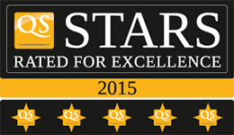

Every university has its own culture, community and learning environment. When you choose Deakin you choose a leading provider of innovative learning, and university that values a positive student experience. Deakin wants you to get the best education you can, in the best learning environment they can provide. To learn more about what it is like to study at Deakin, read the International Student Undergraduate Course Guide.
Deakin Rankings and awards

Deakin University has won the prestigious Australian University of the Year award, twice for our innovative use of technology in education and for our partnerships with industry.
Deakin continues to win numerous academic awards and receive high rankings from various independent organisations, these include:
Ranked in the top 3% of universities worldwide according to all major international university rankings – Times Higher Education, QS and ARWU*
5-star rated university, awarded by the prestigious university ranking organisation Quacquarelli Symonds (QS).
Ranked among the Top 50 universities under 50 years of age by both Times Higher Education and QS.
Ranked 32 in the world in the discipline of Education in the 2015 QS Discipline Rankings.
Top 150 in the world in Accounting and Finance in the 2015 QS Discipline Rankings.
Top 200 in the world in Business and Management Studies, Computer Science and Information Systems, Law, Politics and International Studies, Philosophy, Psychology, and Sociology in the 2015 QS Discipline Rankings.
Ranked 3rd in the world for Sports Management in the Sports Business International 2014 Postgraduate Sports Course Rankings.
Australian leader for student satisfaction, first in Victoria and third in Australia (Australian Graduate Survey)
Ranked second in Australia for Careers Advice, fifth for Employability and sixth for Work Experience in the 2014 International Student Barometer (ISB) survey.
Highest number of Australian Learning and Teaching Council awards in 2011
9th largest number of grants awarded by the Australian Research Council Linkage Round for 2012 Funding.
Deakin University is a member of Universities Australia and the Association of Commonwealth Universities. Our award-winning approach to higher education ensures professional associations, relevant industries and universities worldwide recognise your degree.
Victoria International Education Awards
Deakin was the most honoured university at the 2014 Victoria International Education Awards (VIEAs), an initiative of the Government of the Australian State of Victoria. The three awards won by Deakin place it at the top among Victorian universities for international student education and careers support. The 2014 VIEAs won by Deakin are:
The Premier's Award for International Education Provider of the Year, the highest award presented at the VIEAs
Excellence in International Education (University)
Excellence in International Education (Student Employment and Careers)
Australian Research Council linkage awards
Deakin is proud to announce excellent outcomes in the latest Australian Research Council for 2014 Funding and has been awarded over $2.5 million. Deakin has received seven awards representing a success rate of 43.8% against a national average success rate of 35.9% and top success rate in Victoria.
Three awards were given to the Faculty of Science, Engineering and Built Environment.
Two awards for the Institute for Frontier Materials, and;
Both the Centre for Intelligent Strategic Research and the Faculty of Arts and Education were awarded one award each.
Living in Victoria, Australia
Victoria offers an experience found nowhere else. Surf beaches, snowfields, expansive countryside and native forests make Victoria a great place to live and study.
Victorians come from more than 200 countries around the world , giving the region a vibrant cosmopolitan feel with diverse multicultural festivals and events.
Victoria is home to diverse regional areas and attractions , from pristine beaches and coastlines to national parks and forests teeming with native wildlife. Watch the video below to explore Victoria's amazing scenery.
Melbourne
Melbourne is the multicultural heart of Australia, the world's most liveable city* and the number two city in the world for students**. It's an exciting and vibrant city famous for its:
fantastic choice of food
entertainment precincts
social scene
beautiful surrounds
Melbourne has a population of four million people. It's well known for its music festivals, free community-based activities , performing arts, quality restaurants, excellent shopping and beautiful parks and beaches which attract visitors from around the globe.
World-class sporting facilities draw international events such as the Australian Grand Prix, Australian Tennis Open and the International Cricket Test series.
The world famous Melbourne trams complement the city's public transport system , which includes train and bus services that run from the city centre to Deakin campuses. See more of Melbourne in the video below.